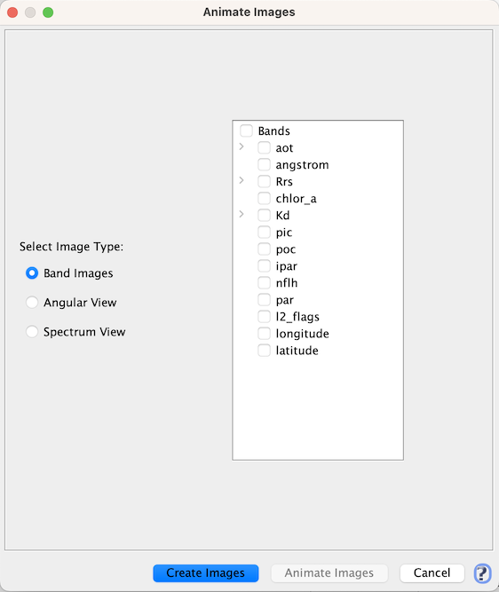
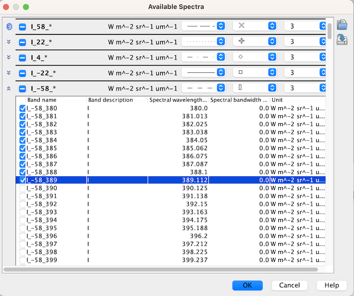

| The Spectrum View Animation |
|
If you have opened a data product which contains spectral bands, you can use the spectrum view
animation to animate the spectrum view for a given pixel position.

Choosing "Spectrum View" on the above Image Animator GUI opens a view which looks similar to this one:
Note that the spectrum view animation can only display the intensities of spectral bands and animate the spectrum view.
The spectrum view will remain empty for products without any spectral bands.
By clicking  you open the Spectrum Chooser
which allows you to define which spectra or bands to show.
you open the Spectrum Chooser
which allows you to define which spectra or bands to show.

You can also use the Spectrum Chooser to change the symbol and line style of a spectrum.
Tip: If you press the SHIFT key while moving the mouse cursor, the Sentinel Toolbox adjusts the axes to the local
values at the current pixel position, if you release the SHIFT key again, then the min/max are accumulated
again.
In the following, the tool buttons of the spectrum view animation are explained.
|
Opens the Spectrum Chooser, which allows you to choose which spectra and bands to display and to alter their appearance. |
 |
Start to animate the spectrum views of the chosen bands. |
 |
Switches the grid lines of the diagram on and off. |
 |
Displays this help page. |